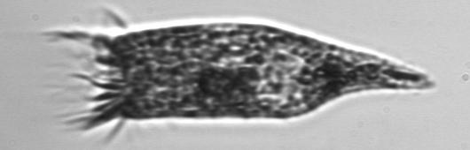
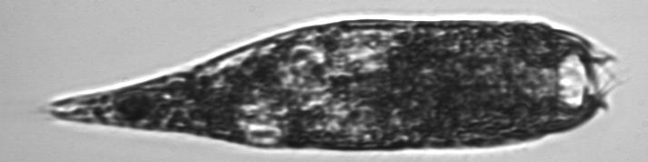
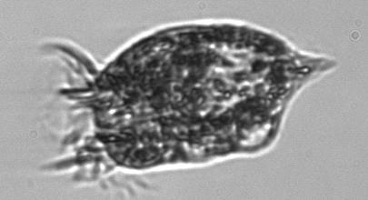

<div><h1>Strombidium_conicum</h1></div>
-Usually cilia are visible in two major tufts-Body can be elongated or shortened-Length: 65 (40-110) µm<br>

<div style="display: inline-block">
IFCB1_2006_272_000827_02872<br>

</div>


<div style="display: inline-block">
IFCB1_2006_272_021853_00306<br>

</div>


<div style="display: inline-block">
IFCB1_2006_272_013525_02073<br>

</div>


<div style="display: inline-block">
IFCB1_2008_236_000420_01227<br>

</div>


